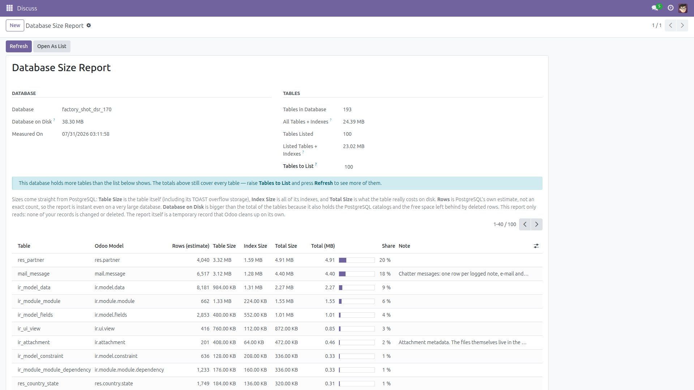
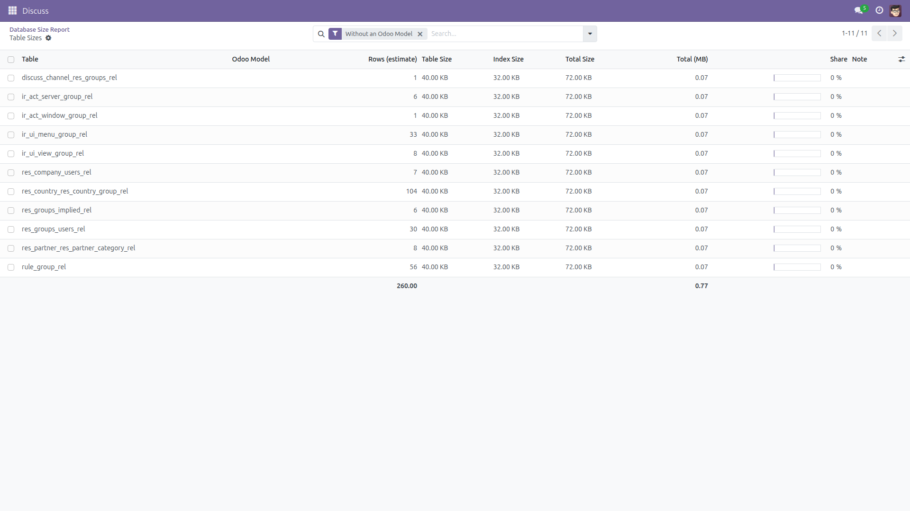
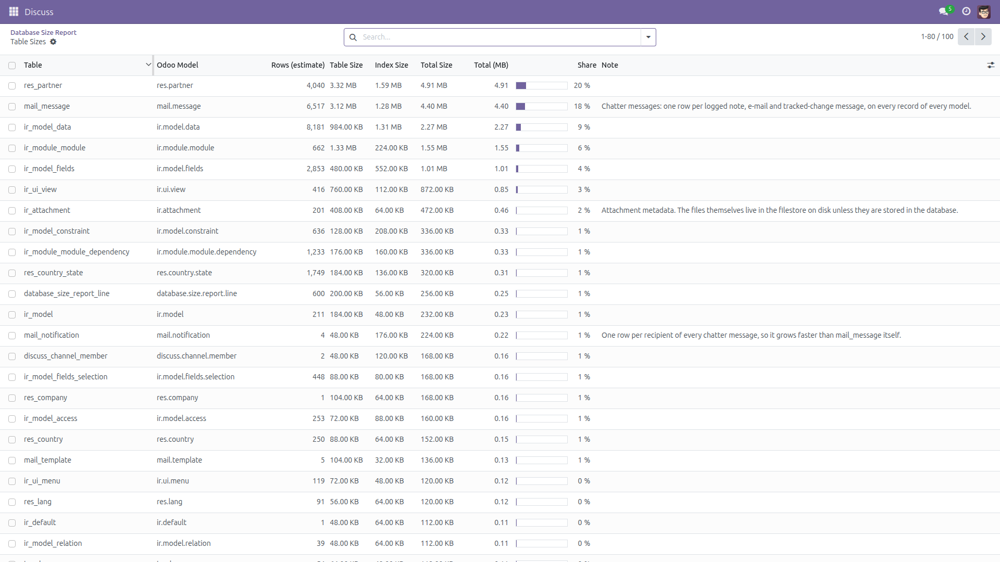

Which tables are using your database, and how much.
When an Odoo database starts filling the disk, nothing in the interface says what is responsible — answering it means opening psql and knowing the right catalog query. This module adds a read-only report for administrators: the size of the database on disk at the top, then every table with its size, its index size, the total it really costs, an estimated row count and the Odoo model stored in it, biggest first.
Free and open source (LGPL-3), Odoo 14.0 through 19.0.
ir_act_window is correctly shown as ir.actions.act_window instead of being guessed wrong.reltuples), so the report is instant even on a database of hundreds of gigabytes. The column is labelled as an estimate, and tables PostgreSQL has never analysed are flagged.mail_message and mail_tracking_value (chatter messages and their tracked changes), mail_notification and mail_followers, ir_attachment, ir_logging and the *_log tables each carry a plain-language note explaining what fills them.The sizes cover the whole database, including tables the user has no access to, which is why the report is restricted to the Settings group (Administration: Settings).

The database total on top, then the biggest tables with their model, estimated rows, table size, index size, total and share.

Tables that belong to no Odoo model — many2many relation tables here — are listed with an empty model rather than hidden.

The same tables as a normal list: filter and group them, and read the note on the tables that usually explain a growing database.
database_size_report folder into your addons path (or install it from the Apps store).base.pg_table_size).pg_indexes_size).pg_total_relation_size).reltuples), maintained by ANALYZE and autovacuum. It is deliberately not an exact count: COUNT(*) on every table would read the whole database. A table that has never been analysed shows 0 and is flagged No Statistics (PostgreSQL 14 and above; older versions cannot tell an unanalysed table from an empty one).pg_database_size, larger than the total of the tables because it also holds the PostgreSQL catalogs and the free space left behind by deleted rows.Row counts are estimates, not exact counts. Only real tables, partitioned tables and materialized views are listed — SQL views have no storage of their own, so they cannot appear. Sizes reflect what is on disk, which is normally larger than the live data because deleted rows keep their space until VACUUM reuses it. The module reports; it does not clean up, compress or delete anything, and it never offers to. The only thing it writes is the report itself, a temporary record Odoo cleans up on its own.
Identical behavior on every supported series (14.0 – 19.0).
Questions, bugs or feature requests?
Email f.ashraf.dev1@gmail.com — I read and answer every message.
License: LGPL-3 · Source on GitHub · Issues and contributions welcome.